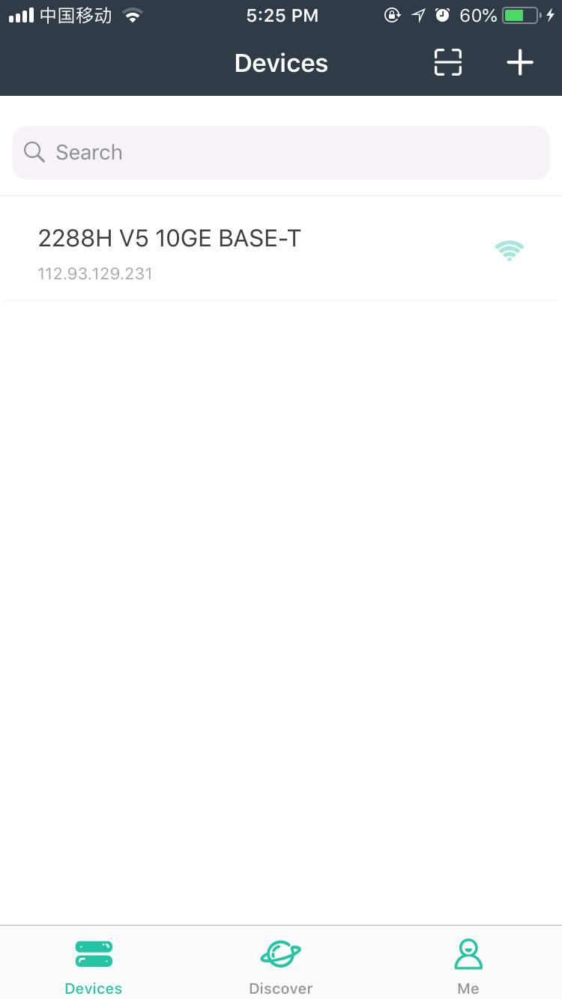

On the home page, switch to the Add Device page in either of the following ways:
a) Touch
 on the title bar of the home page.
on the title bar of the home page.
b) Select the Search tab and touch the add device button.

Set the host (IP address or domain name), port number, user name, and password of the device to be added, and touch Submit. If the device is successfully connected, the app automatically obtains the device alias as the device name. If the alias is not set, the device model will be used as the device name. If the device model cannot be obtained, the default device name "Device" will be used.

After the device is successfully added, the newly added device will be displayed in the device list.
